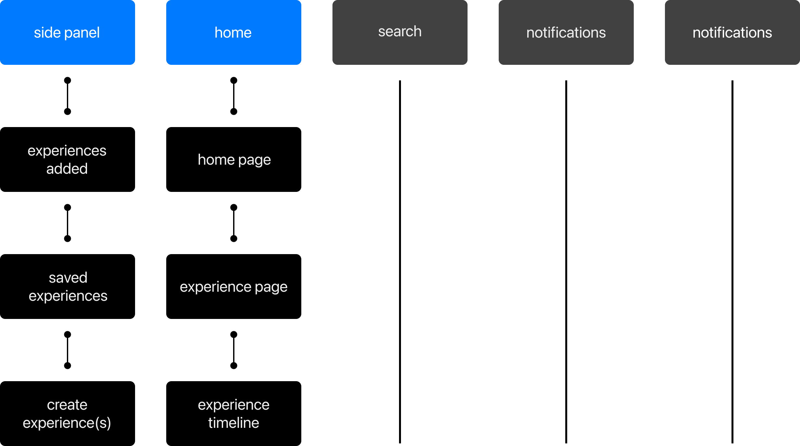
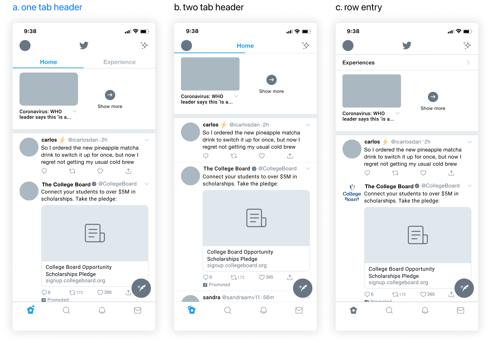
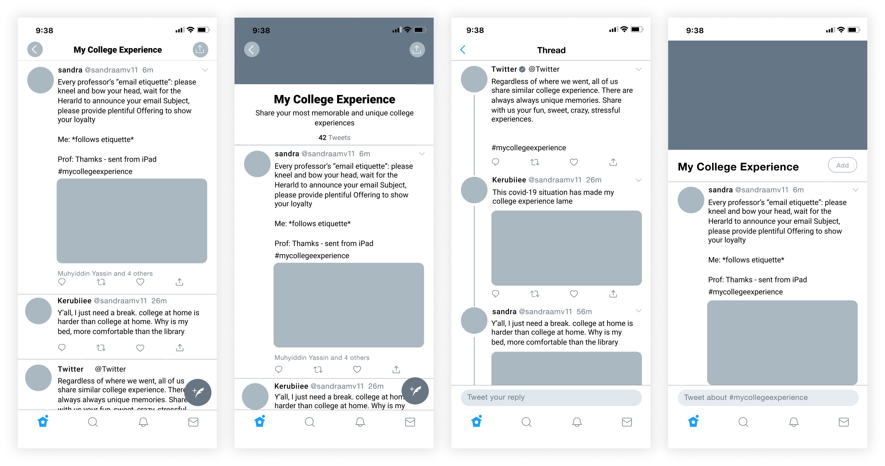

birds chirping
With no more than 280 characters, a tweet has revolutionized the way we communicate by sharing our thoughts as a short and sweet chirp that echoes through the screen of our followers. Twitter has become a casual place with low barriers to bring together users, making it accessible for anyone to feel comfortable and start a conversation. However, many of the family members and friends we follow share different interests. For more people, this creates a content overload, in which users are constantly bombarded with content to which they don’t necessarily relate.
To better understand the users’ needs in terms of content and socializing, I interview current Twitter users from different backgrounds. I made it a goal to identify the key pain point at which users fail to find Tweets they identify with.
retweeting feedback
After evaluating how the Experience Page feature addresses the problem and its area of improvement, I layout a design journey to generalize an idea of how to feature was going to work. To understand the user flow, I created a list of flow requirements: Second home timeline, Saved experiences, Categories with different experiences, Experience Page, and Creating Experiences. Additionally, to illustrate the feature in relation to the app as a whole, I began to map out the information hierarchy.
During the mid-fidelity iterations, I focused on exploring the entry point, experience timeline, and experience page.

entry point
The entry point for the Experience Timeline would be from the ‘Home Page.’ Having the entry point at the front of the page would allow users to reach the entry location almost effortlessly.
The visual component would help create familiarity with the feature. That said, for the exploration of this page, I considered the following questions:
- How should the Home timeline display two different pages?
- Which entry point visually clearly displays the entry point?

Visually, it was easier for users to identify how to reach the Experience Timeline in the first iteration than the other iterations. Several of the users quoted, “The first iterations have the Experience timeline labeled, making it easy to identify that there are two timelines.” Because of this, I decided to move with the first iteration as my entry point.
experience page
Since the home page was going to have two different pages, it was important that visually both pages weren’t that different from one another. Additionally, going back to my brainstorming, I wanted to focus on how to best organize the experiences to prevent content overload. That said, for the exploration of this page, I considered the following questions:
- How should users navigate through the different topics on the Experience Page?
- How can the Experience page be organize and visually look similar to the Home Page?
I decided to go with the third iteration. Users indicated that the third iteration of the Experience Page flows better with the starting point. Although users felt that the other iterations organize the experience better, for them it felt like just a list of experiences and didn’t motivate them to interact with it.
ending page
The focus on the ending point is for users to be able to see all the tweets written for a specific experience. I chose to explore two different types of layout — a thread and a timeline — of the screen. Users would be able to tweet on this page, so it needed to be clear that a tweet can be added through here. That said, for the exploration of this page, I considered the following questions:
- How should tweets be displayed in the experience timeline? A page? A Thread?
- How should users add tweets to the experience timeline?

The second iteration felt more authentic and balanced with the entire feature. The descriptions on top of the page made it clear to users the purpose of the page.
After my user test feedback, I realized that I had to explore more creative iterations — with a more visually meaningful and simpler interactive flow.
visual design
Before creating my final design, I had to make sure the feature’s visual design was consistent with the applications. And throughout this entire process, I asked myself, “Is this something Twitter would visually design?’ I wrote out some design goals, considering my user’s test feedback, which was to:
- See if I could solve any user flow problems through visual design
- Simplify to existing patterns
ui kit
I created a UI kit as a comprehensive resource to allow me to plan my design’s structure properly. With the assortments on the kit, I was able to dive deeper into the visual treatment of my high-fidelity prototype.
final flow
After going back and forth with user testing and feedback, this was my final interaction for finding experiences and connecting with new users.
conclusion
Users are constantly looking to share, find content, and connect on social media. Twitter's mission 'to give everyone the power to create and share ideas and information instantly without barriers has allowed users to communicate and connect through ideas. I hope my final prototype can further this experience for users by helping them find relatable content and connect with other users through it.
final tweet
This was my first time working on a product design project and one of the best learning experiences. Although I constantly struggled and doubted myself throughout the process, I was able to think and grow as a designer. I'm excited to see what the future holds for me with product design and see how I can continue to develop my design skills. I am beyond thankful to my mentor, Cornell AppDev, and everyone who helped me along the way.


.png)
.png)